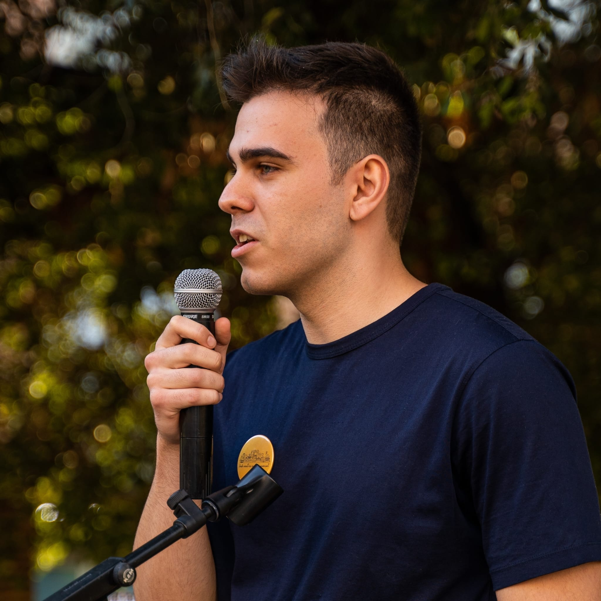

Víctor Puche
Industrial Electronics and Automation Engineering Student
Financial Secretary · Bachelor and Master Representative at UPC
I am an Industrial Electronic and Automation Engineering student at UPC with a strong vocation for electronics, robotics, and automation. My practical experience includes a research stay in autonomous robotics in Vienna and an R&D internship at Smilics Technologies.
Solid Technical Foundation
Bachelor's degree in Industrial Electronics and Automation Engineering.
Practical Profile
Real projects, from idea to functional prototype. Internship at Smilics Technologies.
Beyond Engineering
Outside the academic and professional sphere, I am a curious and self-taught person. I enjoy learning new things and creating, from small programming projects to artistic drawings and playing the electric guitar. I also enjoy exercise, reading, and community involvement.
Community commitment
From a young age, I have felt a strong commitment to my community and its well-being. For the past two years, I have actively participated in various community initiatives, acting as an intermediary between local residents and political authorities to improve everyone's quality of life. Through this, we have successfully engaged citizens during key municipal events.
University representation
Recently, I had the honor of being elected to represent students in the cloister of the Universitat Politècnica de Catalunya. I ran as an independent candidate and won my parliamentary representation thanks to the support of my peers. This opportunity allows me to actively participate in university decision-making and defend our interests.
Want to know more about me?
Find my CV →